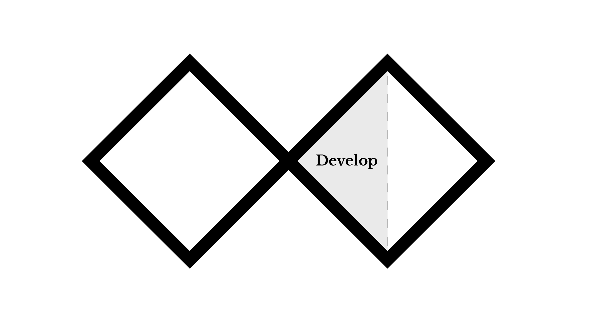
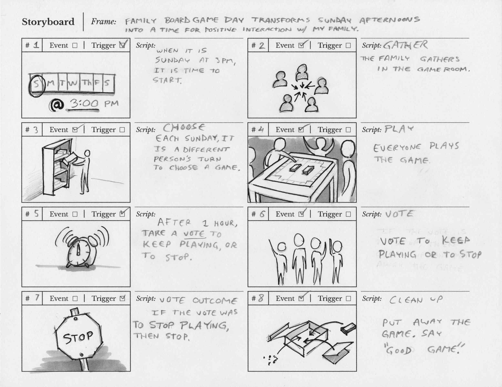

Develop: Storyboard
Refer to the ideas generated during the brainstorm and journey map. Did any strike you as interesting, silly, novel, or clever? Brainstorming sessions don't always lead to useful or good ideas, so it's important to be realistic about their utility in your design process. For this assignment, you will develop and map out key aspects of a creative ritual as a storyboard.
The storyboard is a sequence of drawings or images that communicate what the ritual is and how it will occur. This will give others the opportunity to provide feedback, and forces the designer to think about all of the key decisions in more detail. This storyboard should be fairly abstract, and does not need to reference the app at all.
IMPORTANT: The storyboard should show a person performing/experiencing the ritual.
Review the Introduction page for this project, and recall that while you are trying to help your subject, the point is not to optimize efficiency but to create a meaningful ritual. Do not make a traditional to-do list or calendar app.
A good ritual is:
- Symbolic.
- Separate from everyday routine.
- Made of highly prescribed actions (e.g. tea ceremony).
- Special (e.g. dressed up, weird, silly, magical, or important).
Materials
- Pen and/or pencil
- Journal
- Camera or scanner
- Printer
- Ritual Storyboard Template
Designing the ritual
There are many descriptions available of what a ritual is and how it functions. We will consider key aspects as core design components for the ritual.
- Script: The script describes the triggers and the associated events.
- Frame: The frame is the mental model that suggests what the ritual's purpose is, and what the intended outcome is. Instead of writing, "I play board games with my family on Sunday," you would add context for why the ritual is important and instead write, "Family Board Game Day transforms Sunday afternoons into time for positive interactions with my family."
- Trigger: A trigger could be a time of day, the onset of a certain feeling, or some other moment that initiates the ritual, and the ritual's related events. For example, "It's Sunday afternoon" is a trigger to start the ritual. "Sunday afternoon is over," indicates that it's time to stop the ritual.
- Event: An event is any action or performance that occurs in the ritual. Indication to start an event comes from a trigger or script. Example events include, "Gather in the game room," and "choose which board game to play."
- Design elements: Incorporate use of the media or object design that you mentioned during the interest survey you completed during the first week of class, though you may select other media that you find more appropriate. The experience should have design elements that help create aesthetics that portray symbolism and meaning within the ritual, and/or are of practical use. (IE - If you said you were interested in 3D modeling, you could think about including a physical totem that you model and 3D print to include in the experience. If your media was app design, you could incporate a phone app that helps facilitate the ritual in some way.)
Instructions
- Download: Ritual Storyboard Template
- Write the frame and list all of the triggers, events, and scripts that comprise the ritual on the storyboard.
- Number the sequence to indicate the flow of the storyboard (e.g. #1, #2, etc.)
- You can print the Ritual Storyboard PDF or use a markup tool to write directly on the digital file.
- There must be a minimum of one fill sheet (8 boards) describing the ritual.

Post work
Use the file format indicated in each step. You must obtain prior approval to deviate from these upload requirements. Please check that your work has uploaded properly.
- Submit the Storyboard as a scanned or well-photographed image.